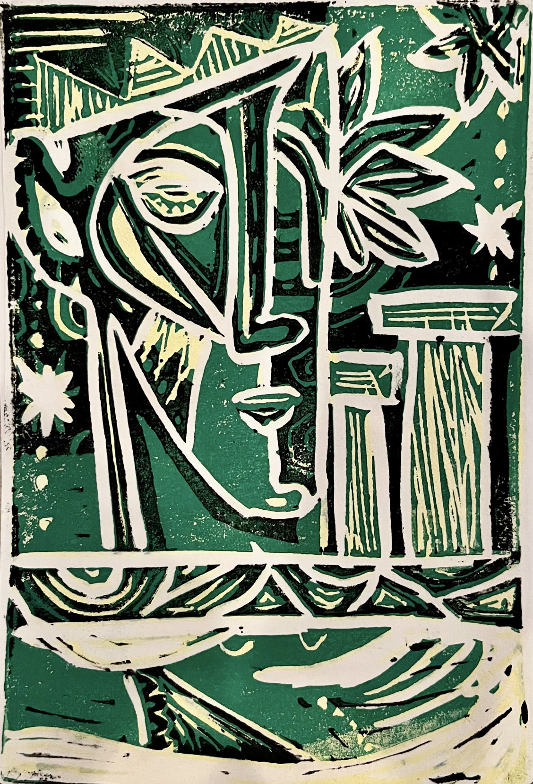
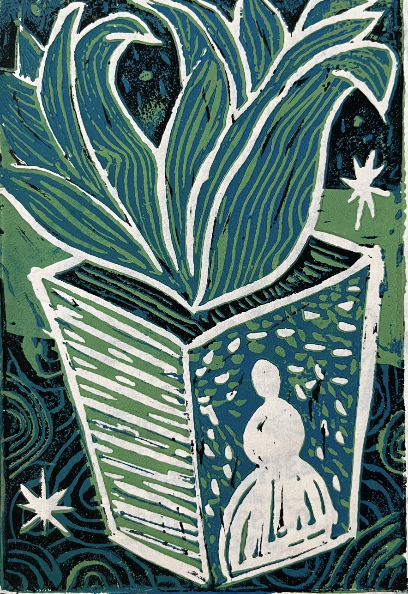
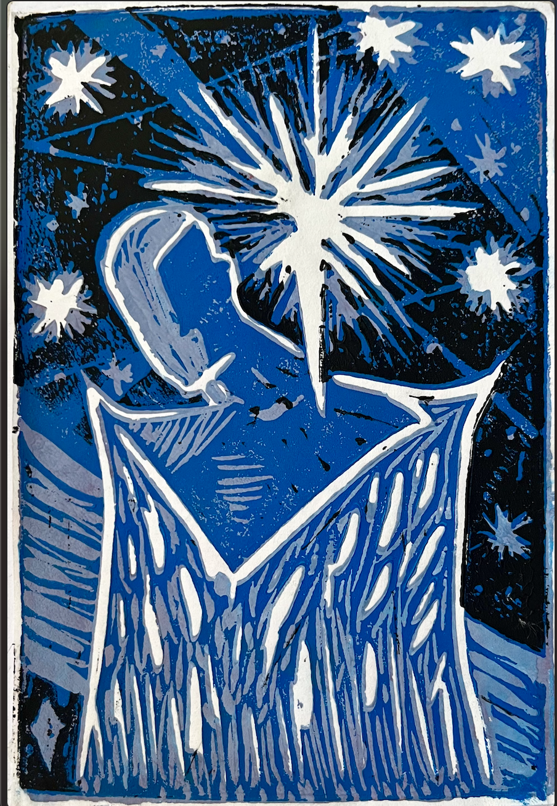
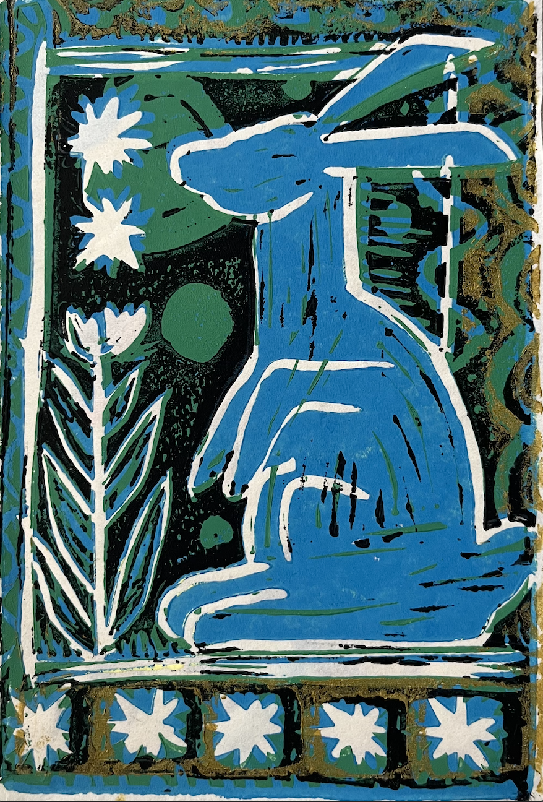

New media · Public collections · Cultural infrastructure · Goodreads power user
Gwen.
Former product manager, current ITP student. I build things that help people find what belongs to them.
Critical Writing
Three interconnected essays on autofiction, confession, and narrative form in the digital age.
- The End of Confession: Self, Form, and the Limits of Disclosure Read →
- What Remains Forthcoming
- The Reader Completes the Text Forthcoming
Projects
Future Legends
A month-long public exhibition asking who gets to imagine and archive technological futures. Originated and co-curated at NYU during Black History Month 2026, featuring scholars Ruha Benjamin, Ari Melenciano, and Salome Asega. The exhibition began as a 12-page proposal written before there was a gallery, a budget, or a confirmed artist, and was funded through institutional support from NYU departments, SGA, and CMEP.
Documentation →East River Projection
A large-scale projection mapping the ecological history of the East River onto the Manhattan Bridge. The piece surfaces what the river has been — industrial, ecological, contested — and brings that history into public space without requiring anyone to seek it out. Research began with a NYU Libraries catalogue search for historical materials; the ecological record that surfaced redirected the project entirely.
Project notes →Video
Project Title
Brief description of the project and what it investigates.
Project Title
Brief description of the project and what it investigates.
Relief Printmaking
Reduction linocuts, 2024–2025.





Contact
Reach me at your@email.com